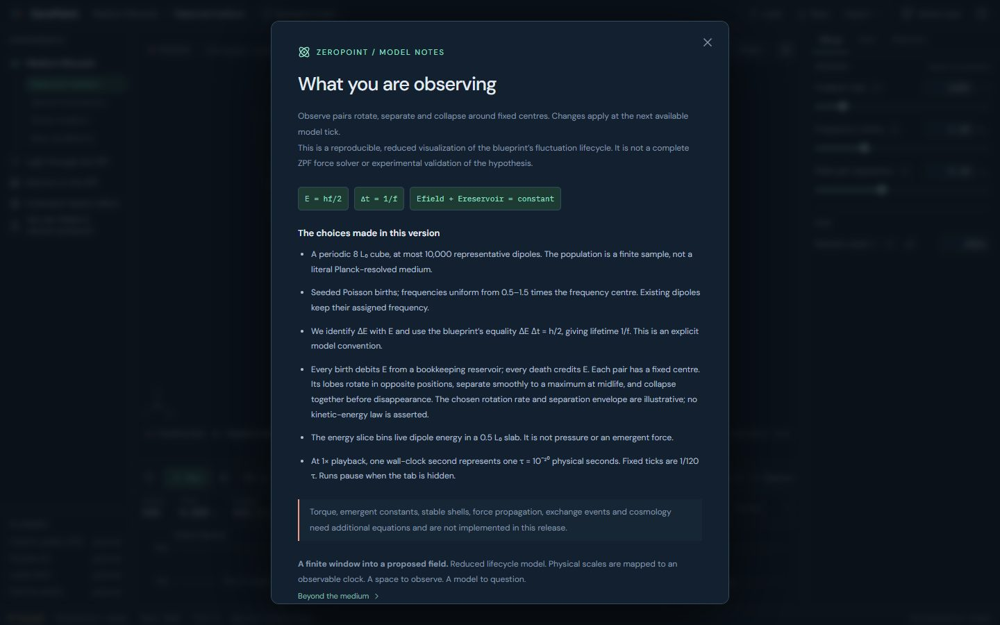
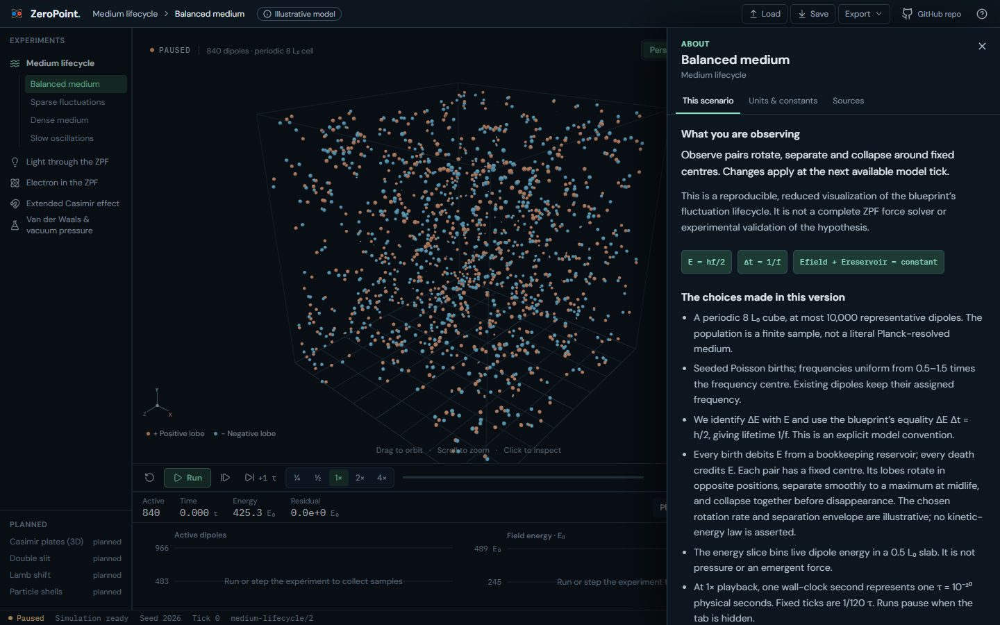
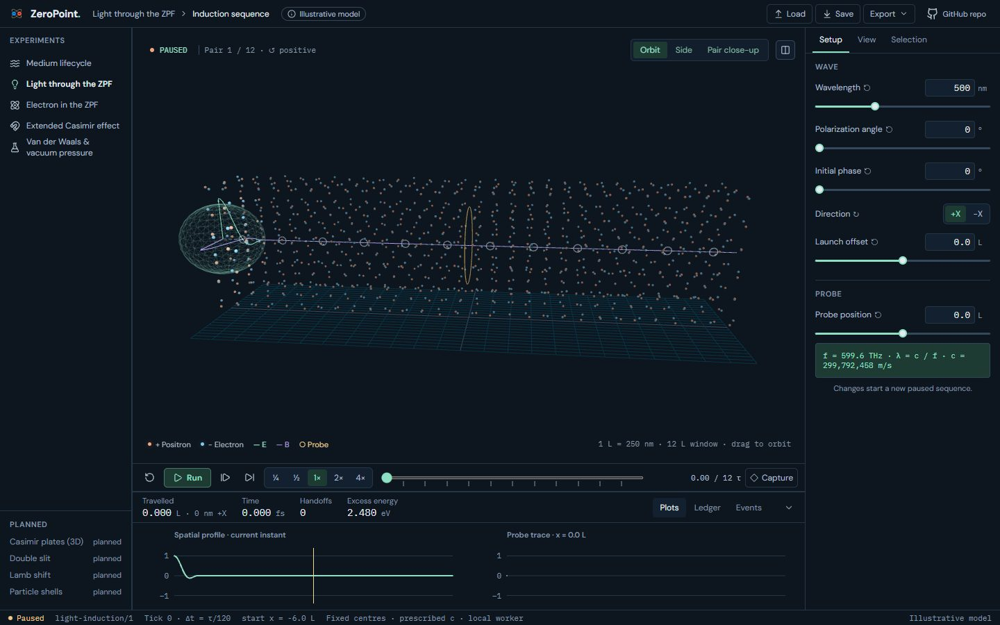
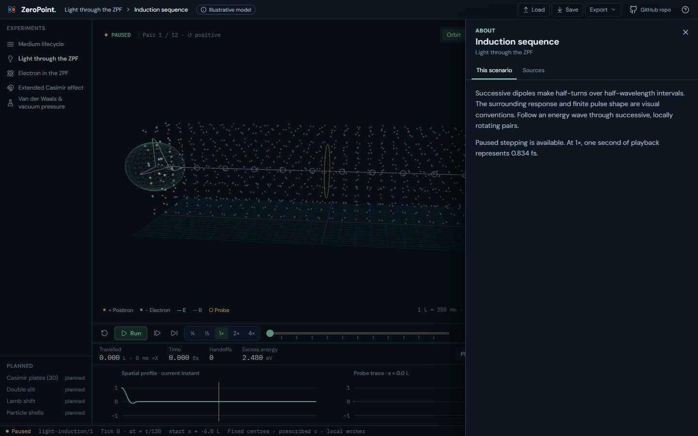
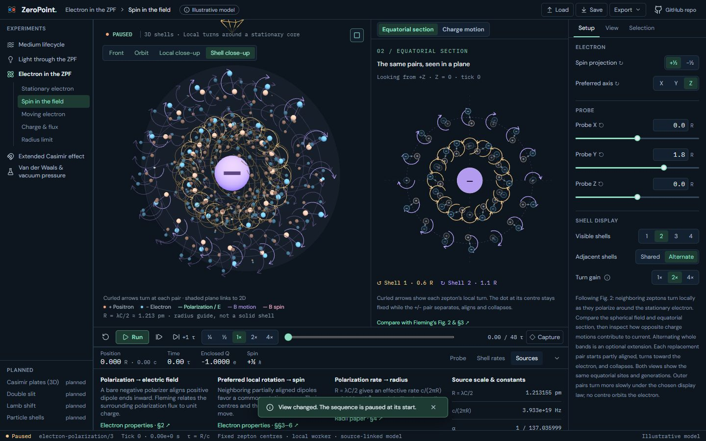
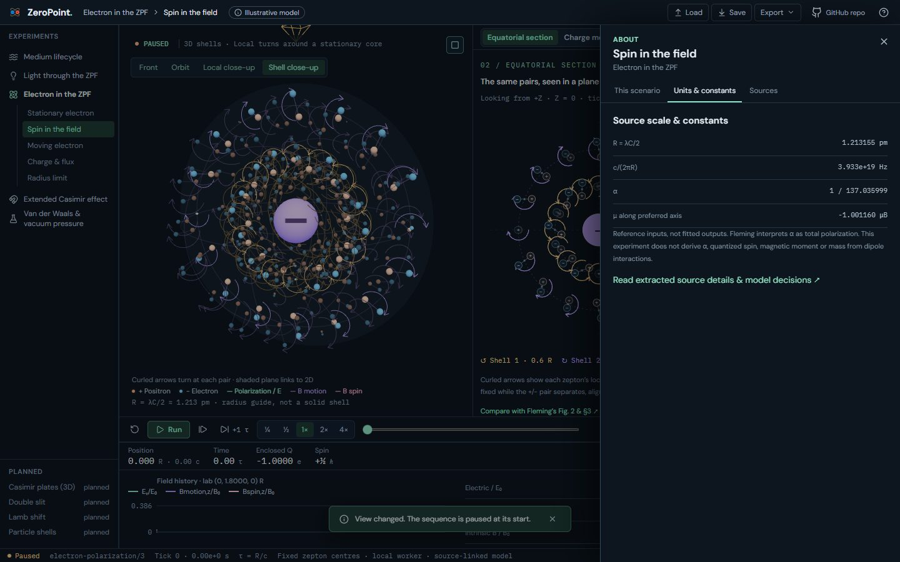
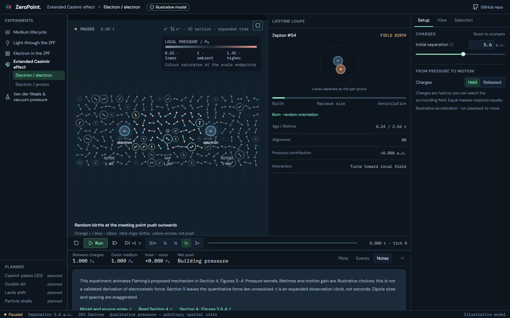
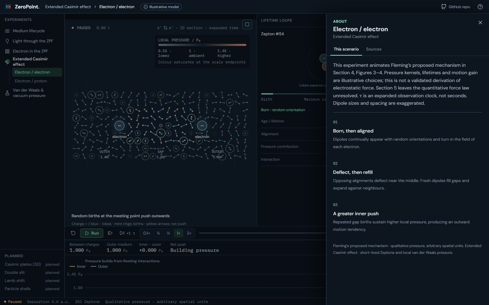
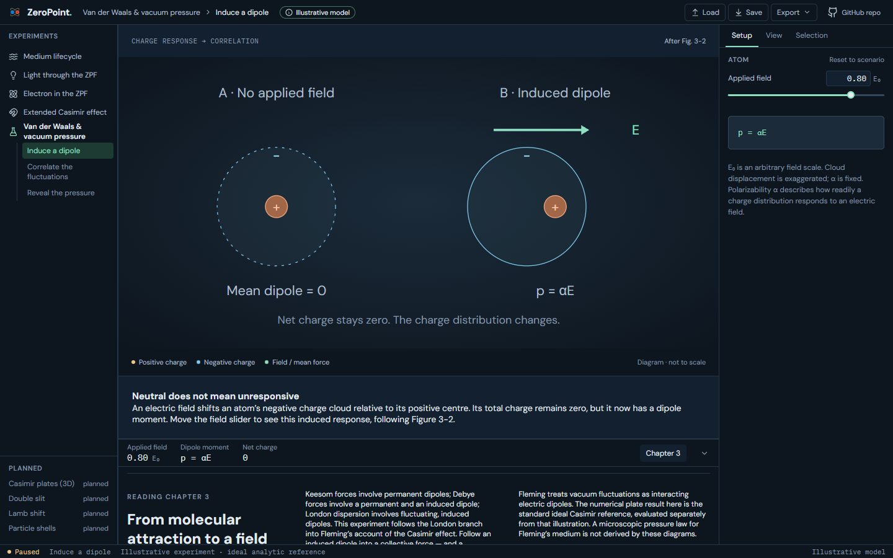
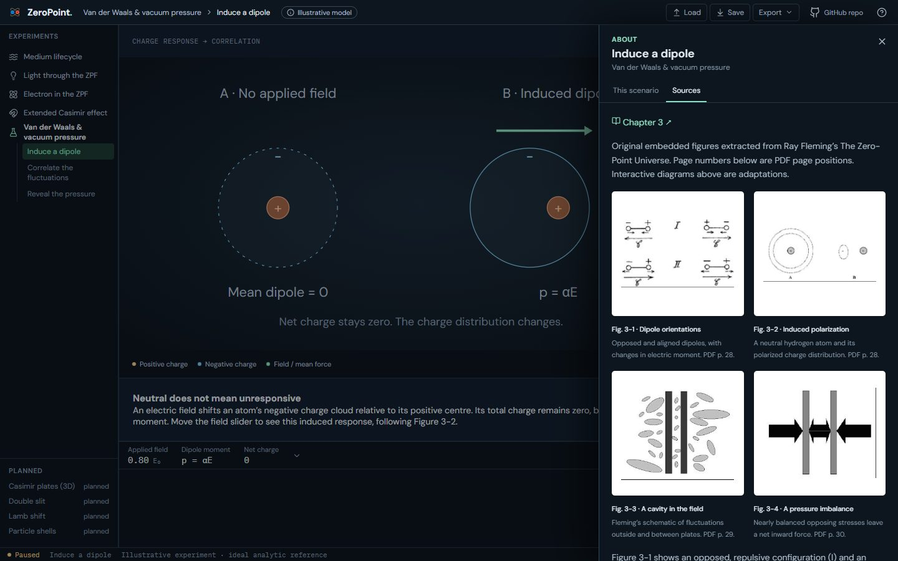

UI 14a · About sheet: before and after
One About sheet per lab, over the inspector, opened by the header's Illustrative model chip, the ? button or Shift ?; Esc closes it. Its tabs are This scenario (what you're seeing and its assumptions), Units & constants, and Sources; a lab shows only the tabs it has content for, and Saved views joins with URL state (UI 16). The content moves verbatim from where it lived: Medium's model dialog (now gone) and its Scale & conventions card, Light's note at the foot of Setup, Electron's Setup paragraph and Sources dock tab, Casimir's Notes dock tab and van der Waals' Chapter 3 dock tab. Off the plate-pressure stage, van der Waals' dock is now just its readout strip.
Real screens: "before" runs the layer below, and "after" runs this layer. Click an image to open it at full size. Regenerate with node scripts/compare-screens.mjs --before ../13-split-view --out docs/ui-previews/14a-about --set about --title 'UI 14a · About sheet' --description 'One About sheet per lab, over the inspector, opened by the header'''s Illustrative model chip, the ? button or Shift ?; Esc closes it. Its tabs are This scenario (what you'''re seeing and its assumptions), Units & constants, and Sources; a lab shows only the tabs it has content for, and Saved views joins with URL state (UI 16). The content moves verbatim from where it lived: Medium'''s model dialog (now gone) and its Scale & conventions card, Light'''s note at the foot of Setup, Electron'''s Setup paragraph and Sources dock tab, Casimir'''s Notes dock tab and van der Waals''' Chapter 3 dock tab. Off the plate-pressure stage, van der Waals''' dock is now just its readout strip.'.
Medium · About › This scenario (was the model dialog)




Light · About › This scenario (was a note at the foot of Setup)




Electron · About › Units & constants (was in the Sources dock tab)




Extended Casimir · About › This scenario (was the Notes dock tab)




Van der Waals · About › Sources (was the Chapter 3 dock tab)



